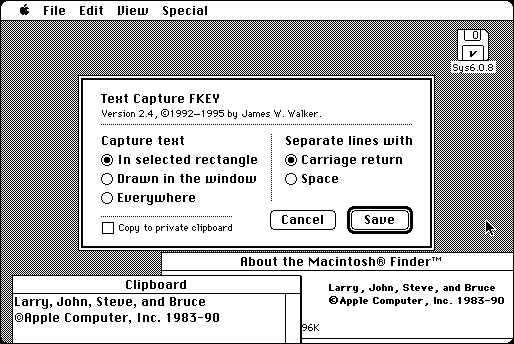

Download
Text_Capture_FKEY_2.4.zip (16K) Text Capture FKEY 2.4 repackaged into a zipped hfs disk image and checksum file. The disk image can be mounted with Mini vMac.
Text_Capture_FKEY_2.4.sit.bin (16K) Text Capture FKEY 2.4 in the original format.
copyright: James W. Walker
mod date: Sep 28, 1995
license: Freeware
from url :
James Walker’s Mac Stuff
“This FKEY copies styled text from a window to the clipboard.” “It works by forcing the application to update the window, and 'watching' as the text is redrawn.”

If you find these downloads useful, please consider helping the Gryphel Project, which hosts them.
Here are the md5 checksums for the downloads, signed with Gryphel Key 5:
--------- GRY SIGNED TEXT --------- 65d2ec90a8d8ee8331d52ae079deaa4b Text_Capture_FKEY_2.4.zip 3c3e037253422f7e068e65ed19c1acdc Text_Capture_FKEY_2.4.sit.bin ------- BEGIN GRY SIGNATURE ------- Gry/4Xa8CFcUzxdN/A4/f/+FDEblv4I+wkl7hyaOEAUTAOEQyh3UQKCsuvs7Oc/i MQZTO6tTVl5VWwoNTrmH/mUqZa/m0U4vty7HoXfwRJQ8ZaPiwDVLM8Fy5di/cHyA gh3Jbto5xwLSlsmAynp2jKAS0WzWxTOuhTp8YAAPYUu3czPX2Y9AvYZG9fCyo3pg -------- END GRY SIGNATURE --------